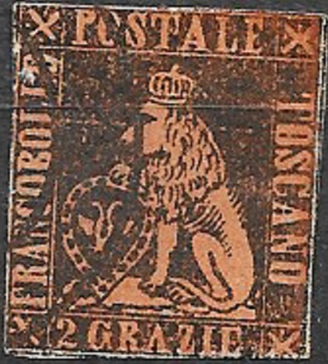
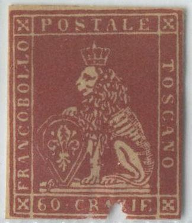
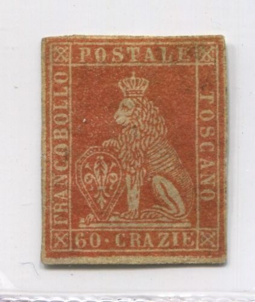
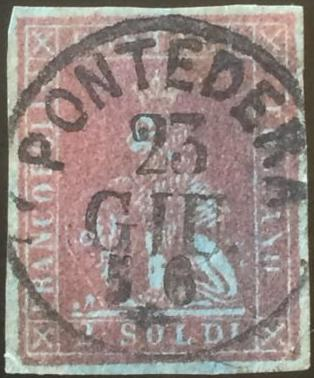
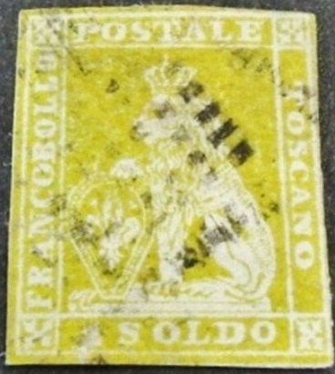
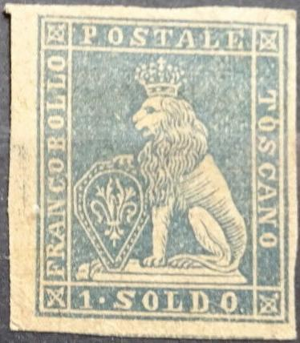

Other very primitive forgery types: 2 Crazie black on yellow and 2 Crazie black on green. Both have a (printed?) cancel on them consisting of two arcs. Note that they are all of slightly different type.
Toscana - Toscane - Toskana
Return To Catalogue - Tuscany 1851 issue, forgeries, part 1 - Tuscany 1851 issue, forgeries, part 2 - Tuscany 1851 issue, forgeries, part 4 - Tuscany Fournier forgeries - Tuscany 1851 issue, more Fournier forgeries - Tuscany 1851, Oneglia(?) forgeries - Tuscany 1851 issue - Tuscany 1860 issue and miscellaneous - Italy
Note: on my website many of the
pictures can not be seen! They are of course present in the
catalogue;
contact me if you want to purchase the catalogue.
Album Weeds gives already 13 (!) forgeries for this issue. The genuine stamps have watermarks (though some forgeries have also a watermark) and were printed on rough handmade paper. Some of these forgeries are very deceptive. The genuine stamps have a small cross on top of the crown. However, this is often hardly visible and will become a spike. The cross should be under the left hand side of the vertical stroke of the "T" of "POSTALE". If the cross is clearly visible, then the stamp is 'suspect'.

Other very primitive forgery types: 2 Crazie black on yellow and
2 Crazie black on green. Both have a (printed?) cancel on them
consisting of two arcs. Note that they are all of slightly
different type.
This forgery of the 60 c has a watermark, the "6" is too large. The bottom frameline is continuous and there is a break in the upper frameline above "AL". One of the forgeries has a "FITTO DI CECINA 2 SET. 1855" cancel. This forgery is also known as 'Faux de Florence'.

Vertical column of 4 of such forgeries.


Forgery of the 1 Q stamp with the "S" of
"POSTALE" very badly done and an upwards bottom right
part of the "Q" of "QUATTR". Also a 9 c made
by the same forger. Note that the frontleg of the lion covers the
shield too much, giving the impression that the leg is placed too
far to the front.

Extremely badly done forgery of the 1 Q value.... And an improved
version of the same forgery?

Forgery of the 60 c with very skinny '60'.

Very primitive forgery of the 1 Cr value, the lion has a weird
face, small crown and almost straight hair. This forgery is
identical to the image provided in the John Edward Gray 'The
Illustrated Catalogue of Postage Stamps' of 1870 (except that it
is in black color there, see next image). It might have been
based on this image or have been reprinted from the plates to
make the book. To make things even more complicated, the
catalogue of Placido Ramon de Torres
"Album Illustrado para Sellos de Correo" of 1879 also
has the same image! (information passed to me thanks to Gerhard
Lang, 2016).
 
Forgeries of the 60 c value with very narrow "O"s,
especially in "POSTALE" and the second "O" of
"TOSCANO".


In this forgery type, the lion has very neatly combed hair and
his head appears smaller. Also the "O"'s are more
elliptic than in the genuine stamps.


Primitive 1 q forgery. The crown slants forwards. Also a 2 Crazie
forgery of the same set.



Two forgeries of the 2 soldi stamp, one with "PONTEDERA 23
GIU 56" cancel, next to it a 1 Soldo forgery with a
"PONTEDERA 10 FEB 56" cancel, possibly made by the same
forger? The bottom frameline is not interrupted as in the genuine
stamps. In my view, these forgeries have the lion looking
slightly downwards, the lion has a smaller chin and the letters
of "POSTALE" are thinner. Also note the thinner crosses
in the corners.


Two stamps that are most likely also forgeries of the above set.


The Serrane guide mentions some Florence forgeries (Venturini? which were also sold by Fournier apparently). The above shown cancels "LUCCA 23 GIU 1854" and "PISA 16 FEB. 1854" are specifically mentioned in the Serrane guide. Other forged cancels exist.

Forgery of the 1 Soldo, the letters are very different, for
example the "O"s of "TOSCANO" are too fat.

Engraved(?) forgery
This forgery is listed in Billig's forgery guide of Tuscany under 'Abb.37', it is said there that this forgery type is copper engraved. I've only seen the 9 c value.
Some forgeries of the 60 c stamp:
Other forgeries:


Two deceptive forgeries


A very primitive 4 crazie green forgery.

Forgery with all "S"s slanting forwards.
Tuscany 1851 issue,
forgeries, part 1
Tuscany 1851 issue, forgeries, part 2
Tuscany 1851 issue, forgeries, part 4
Tuscany 1851 issue, forgeries, Fournier
forgeries
Tuscany 1851 issue, forgeries, more
Fournier forgeries
Tuscany 1851, Oneglia(?) forgeries


{kind=link}
{kind=link}
{kind=link}
{kind=link}
{kind=link}
{kind=link}
{kind=link}
{kind=link}
{kind=link}